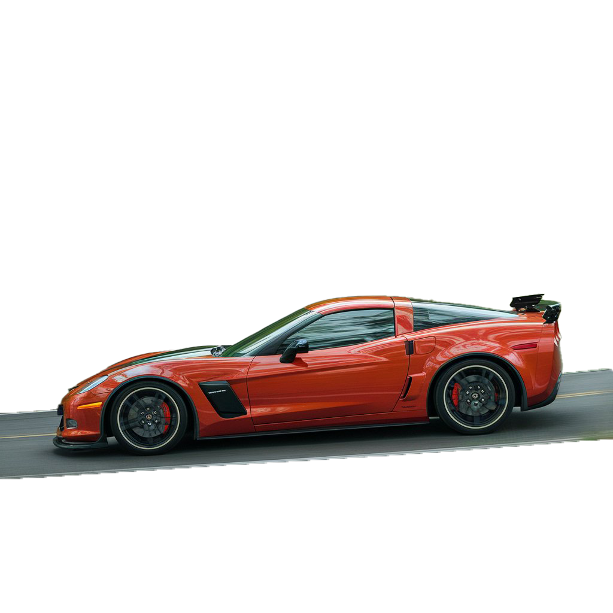

Synopsis
The Last Stand" is a 2013 action film starring Arnold Schwarzenegger as Sheriff Ray Owens, a former LAPD officer now working in the small border town of Sommerton Junction, Arizona. The plot revolves around a notorious drug lord named Gabriel Cortez, who escapes from FBI custody in Las Vegas and races towards the Mexican border in a modified Chevrolet Corvette C6 ZR1 capable of speeds over 200 mph. As Cortez approaches Sommerton Junction, Sheriff Owens becomes aware of the situation and realizes his town is the last line of defense. He assembles an unlikely team consisting of his inexperienced deputies, a former Marine with PTSD named Frank Martinez, and a local gun enthusiast named Lewis Dinkum.
© 2025, Chris Blank. This is a fictitious web page created solely for the purpose of education and training. All products and people associated with this web page are also fictitious. Any resemblance to real brands, products, or people is purely coincidental. Information provided about the product is also fictitious and should not be construed to be representative of actual products on the market in a similar product category.